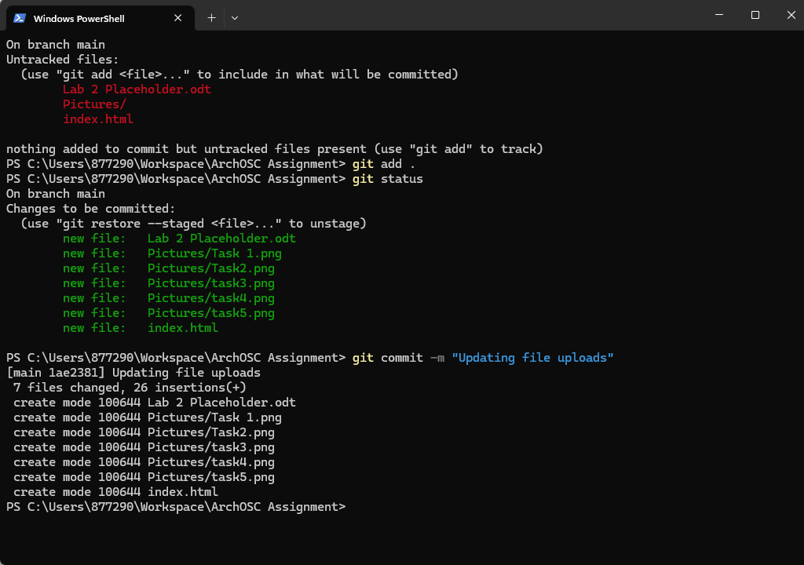
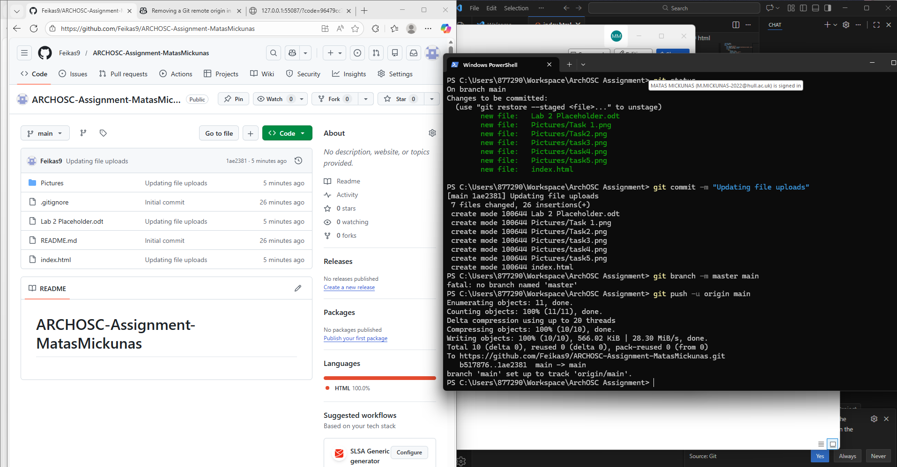
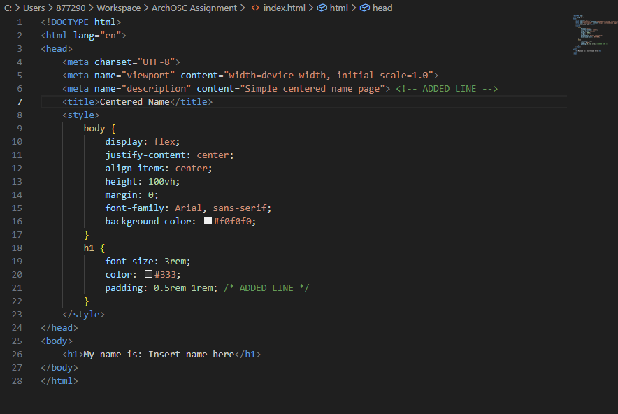
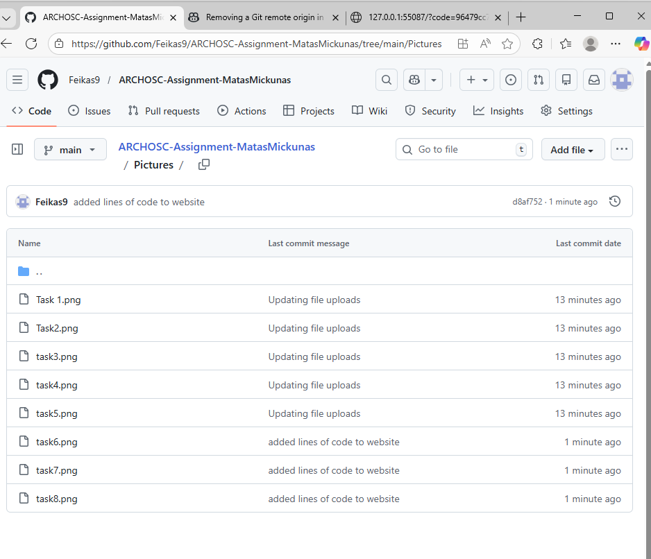

I have followed instructions as provided and have created a local storage container with sub folders and screenshotted the entire thing. I have also created a word doc explaining what I have done. Task3 I have followed instructions and created a new repository in github Task 4 I have created a link between GitHub and local. And created repositories. I have inputted it incorrectly at first so had to replace it. Also I have removed a new word doc since it was not required and combined it with the current place holder Task5 I have followed instructions and copied the code to visual studio saved it in local and opened it Task6 Uploaded web to git Task7 I have pushed to git and set up main Task8 I have added 2 lines of code first one being meta description for better SEO and accessibility and the second one Padding on the heading so the cantered text has some breathing room. Task9 I have created an access point from GitHub to my website





I have made a small website with some text and pictures. I dont see what im supposed to say on how is this supposed to be used in the modern industry
=======
I have followed instructions as provided and created a local storage container with sub folders and screenshotted the entire thing. I have also created a word document explaining what I have done.
Task 3: I followed instructions and created a new repository in GitHub.
Task 4: I created a link between GitHub and local repositories. I initially entered it incorrectly but replaced it and removed unnecessary files.
Task 5: I copied the code to Visual Studio, saved it locally, and opened it.
Task 6: Uploaded the website to Git.
Task 7: Pushed the code to Git and set up the main branch.
Task 8: I added two lines of code: a meta description for SEO and padding on the heading to improve spacing.
Task 9: I created an access point from GitHub to my website.


I have made a small website with some text and pictures. This task helped me understand the basic workflow between local development, Git, and GitHub Pages. I have also went back and updated the code so that everything is displayed in column rather than row, which I think looks better. I have also added some padding to the heading to make it look better. Overall, I am satisfied with the result and I have learned a lot from this task.